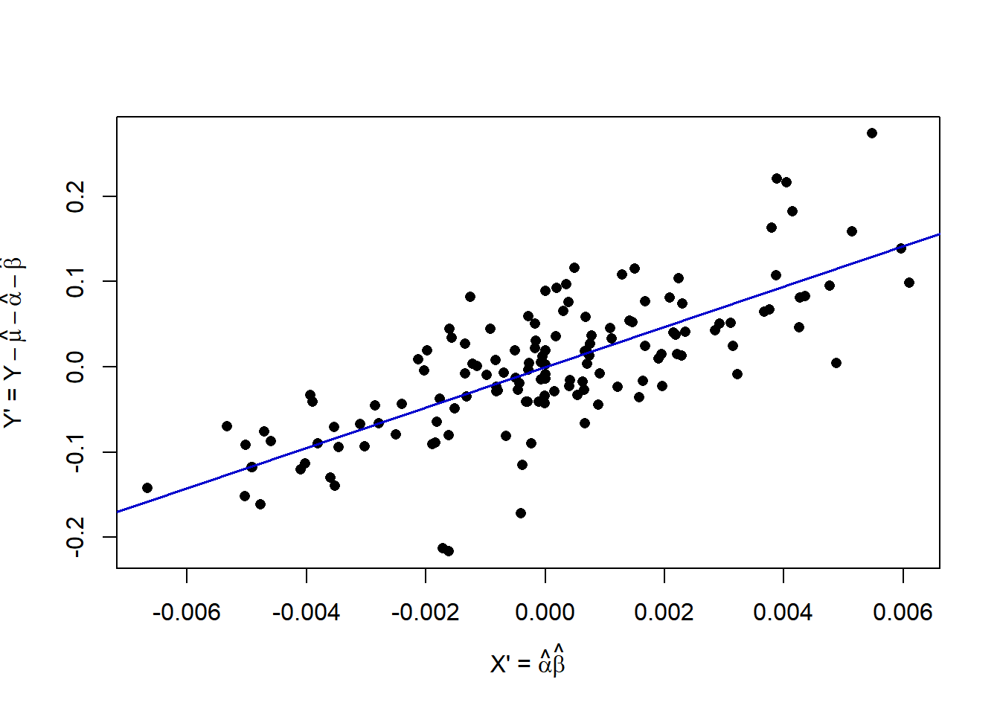

Chapter 7 Two-Factor Designs with 1 Observation per Treatment
In some cases, there is only a single observation within each combination of factor levels. This causes a problem when considering models with interaction effects. The error degrees of freedom are \(df_E=ab(n-1)=ab(1-1)=0\) and the error sum of squares is \(SSE=0\). Several methods have been developed for testing for interaction under particular restrictions. In this chapter, we describe Tukey’s One Degree of Freedom for Non-Additivity Test (ODOFNA). For this test, the form of the interaction and the resulting test are given below.
\[ \left(\alpha\beta\right)_{ij} = D\alpha_i\beta_j \qquad \qquad H_0:D=0 \quad H_A:D\ne 0 \]
Intuitively, the test involves estimating \(\mu\), as well as \(\alpha_i\) and \(\beta_j\) from the marginal means for factors A and B. Then \(D\) is estimated by fitting a regression through the origin relating \(Y^*\) (\(Y\) minus the sum of the mean and the main effects) to \(X^*\) where \(X^*\) is the product of the estimates of \(\alpha_i\), and \(\beta_j\).
\[ \hat{\mu}=\overline{Y}_{\bullet\bullet}\qquad \hat{\alpha}_i = \overline{Y}_{i\bullet} - \overline{Y}_{\bullet\bullet}\qquad \hat{\beta}_j = \overline{Y}_{\bullet j} - \overline{Y}_{\bullet\bullet} \qquad Y_{ij}^*=Y_{ij}-\hat{\mu}-\hat{\alpha}_i-\hat{\beta}_j \qquad X_{ij}^*=\hat{\alpha}_i\hat{\beta}_j \]
For regression through the origin, we obtain the estimate and test whether \(D=0\) as follows, where the model with \(D\) is the complete model.
\[ \hat{D}=\frac{\sum_{i=1}^a\sum_{j=1}^bX_{ij}^*Y_{ij}^*}{\sum_{i=1}^a\sum_{j=1}^bX_{ij}^{*2}} \qquad \hat{Y}_{ij}(C)=\hat{\mu}_{\bullet\bullet}+\hat{\alpha}_i + \hat{\beta}_j + \hat{D}\hat{\alpha}_i\hat{\beta}_j \qquad i=1,\ldots,a; \quad j=1,\ldots,b \] \[ SSE(C)=\sum_{i=1}^a\sum_{j=1}^b\left(Y_{ij}-\hat{Y}_{ij}(C)\right)^2 \qquad df_E(C)=ab-1-(a-1)-(b-1)-1=ab-a-b \] Under the reduced model, \(D=0\), and we obtain the following fitted values and error sum of squares and degrees of freedom.
\[ \hat{Y}_{ij}(R)=\hat{\mu} + \hat{\alpha}_i + \hat{\beta}_j \qquad SSE(R)=\sum_{i=1}^a\sum_{j=1}^b\left(Y_{ij}-\hat{Y}_{ij}(R)\right)^2 \] \[ df_E(R)=ab-1-(a-1)-(b-1)=ab-a-b+1=(a-1)(b-1) \]
Then Tukey’s ODOFNA test is a special case of the general linear test with \(H_0:D=0\) vs \(H_A:D \ne 0\).
\[ \mbox{Test Statistic:} \quad F^*=\frac{\left[\frac{SSE(R)-SSE(C)}{df_E(R)-df_E(C)}\right]} {\left[\frac{SSE(C)}{df_E(C)}\right]} \qquad \mbox{Rejection Region:} \quad F^*\ge F_{1-\alpha;1,ab-a-b} \]
Example 7.1 - Economic Indices for 8 Sources Over 18 Years
A study considered U.S. economic indices for \(a=8\) business news sources over a \(b=18\) year period (K. V. Smith 1969). The sources were: DJIA, Poors, NYSE, GNP, CPI, Forbes, Business Week, and Money Magazine. The years were 1948-1965. There was one index per source per year. The following R code runs calculations directly, then structures the data in matrix form and uses the tukey.test function in the additivityTests package. Note that we order the data frame first by source, then by year within source, as tapply output is sorted by the alphanumeric levels of the grouping variable(s).
## source year index
## 1 DJIA 1965 1.103
## 2 DJIA 1964 1.145## Create a new data frame that orders first by source then year within source
biz <- biz1[order(biz1$source, biz1$year),]
head(biz,2)## source year index
## 126 BWEEK 1948 1.019
## 125 BWEEK 1949 0.995## source year index
## 20 POOR 1964 1.131
## 19 POOR 1965 1.099all.mean <- mean(biz$index)
source.mean <- as.vector(tapply(biz$index, biz$source, mean))
year.mean <- as.vector(tapply(biz$index, biz$year, mean))
a <- length(source.mean)
b <- length(year.mean)
biz$mu <- rep(all.mean, a*b)
biz$alpha <- rep(source.mean-all.mean, each=b)
biz$beta <- rep(year.mean-all.mean, times=a)
biz$Ystar <- biz$index - biz$mu - biz$alpha - biz$beta
biz$Xstar <- biz$alpha * biz$beta
(Dhat <- sum(biz$Xstar*biz$Ystar) / sum(biz$Xstar^2))## [1] 23.6517biz$Yhat.C <- biz$mu + biz$alpha + biz$beta + Dhat*biz$Xstar
biz$Yhat.R <- biz$mu + biz$alpha + biz$beta
SSE.C <- sum((biz$index-biz$Yhat.C)^2)
SSE.R <- sum((biz$index-biz$Yhat.R)^2)
df_E.C <- a*b - a - b
df_E.R <- a*b - a - b + 1
Fstar <- ((SSE.R-SSE.C)/(df_E.R-df_E.C)) / (SSE.C/df_E.C)
odofna.out <- cbind(df_E.R, df_E.C, SSE.R, SSE.C, Fstar, qf(.95,1,df_E.C),
1-pf(Fstar,1,df_E.C))
colnames(odofna.out) <- c("df(R)", "df(C)", "SSE(R)", "SSE(C)", "F*", "F(.95)", "P(>F*)")
rownames(odofna.out) <- c("ODOFNA")
round(odofna.out, 4)## df(R) df(C) SSE(R) SSE(C) F* F(.95) P(>F*)
## ODOFNA 119 118 0.9305 0.4075 151.4522 3.9215 0plot(biz$Ystar ~ biz$Xstar, pch=16,
xlab=expression(paste("X' = ", hat(alpha)*hat(beta))),
ylab=expression(paste("Y' = ", Y-hat(mu)-hat(alpha)-hat(beta))))
abline(lm(Ystar ~ Xstar - 1,data=biz), col="blue3", lwd=1.5)
### biz is sorted by index, then year (stacked COLUMNS from spreadsheet)
(Y.mat <- matrix(biz$index,byrow=F,ncol=8))## [,1] [,2] [,3] [,4] [,5] [,6] [,7] [,8]
## [1,] 1.019 1.077 0.972 1.041 1.110 0.985 0.972 0.996
## [2,] 0.995 0.990 1.114 0.945 0.996 0.994 1.102 1.091
## [3,] 1.213 1.009 1.179 1.157 1.102 1.057 1.211 1.247
## [4,] 1.012 1.080 1.174 1.085 1.156 1.055 1.132 1.178
## [5,] 1.141 1.022 1.074 1.037 1.055 1.038 1.065 1.109
## [6,] 0.952 1.008 0.965 1.083 1.053 1.010 0.938 0.925
## [7,] 1.074 1.004 1.393 0.940 0.994 1.029 1.426 1.497
## [8,] 1.125 0.997 1.231 1.126 1.095 1.020 1.222 1.301
## [9,] 1.011 1.015 1.000 1.034 1.055 1.012 1.026 1.034
## [10,] 0.906 1.035 0.833 1.008 1.056 0.993 0.866 0.856
## [11,] 1.099 1.028 1.425 0.930 1.044 1.038 1.366 1.376
## [12,] 1.073 1.008 1.184 1.127 1.086 1.006 1.097 1.094
## [13,] 0.917 1.016 0.896 1.029 1.041 0.924 0.976 0.953
## [14,] 1.154 1.011 1.207 1.099 1.032 1.031 1.240 1.231
## [15,] 1.018 1.012 0.890 1.078 1.072 1.013 0.880 0.872
## [16,] 1.060 1.012 1.169 1.051 1.050 1.038 1.180 1.201
## [17,] 1.073 1.013 1.145 1.064 1.066 1.043 1.143 1.131
## [18,] 1.093 1.017 1.103 1.083 1.086 1.048 1.095 1.099##
## Tukey test on 5% alpha-level:
##
## Test statistic: 151.5
## Critival value: 3.921
## The additivity hypothesis was rejected.There is strong evidence of an interaction between source and year, of this form.
\[ (\alpha\beta)_{ij} = D\alpha_i\beta_j \quad \mbox{ with } \hat{D}=23.65 \]
\[ \nabla \]
## Warning: package 'emmeans' was built under R version 4.5.3## Welcome to emmeans.
## Caution: You lose important information if you filter this package's results.
## See '? untidy'